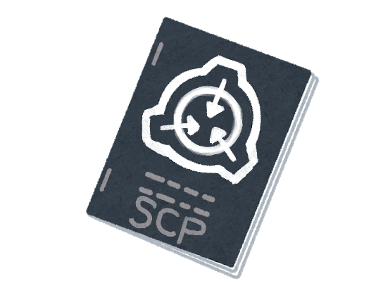

保存資料：2019-01-29の公開ページを再生しています。原HTMLと画像の載荷は保存済みです。
 |
|
| 作者：煮汁 | |
| ツクール：VXAce | |
| ジャンル：見るゲ | |
| 配信/投稿：許可／許可 | |
| 作者コメント： Item #:SCP-■■■■-VIP Object Class:Safe 取扱方：SCP-■■■■-VIPはVIPRPG2016年GW祭りに保管されています。 実験を行う研究員は、サイト管理者の許可の元先述したサイトから SCP-■■■■-VIPのコピーを入手してください。 この際、SCP-■■■■-VIP本体に変更を加えることはいかなる場合でも禁止されています。 とあるSCPオブジェクトの再現見るゲです。CC3.0 BY-SAで公開できる…はず。 | |
| サイト管理者： 当該オブジェクトの閲覧に際し、事後のカウンセリング、及び記憶処理は必要ありません。 |
|
| ダウンロード(2.4MB) / 感想掲示板 | |
| 前の作品 / 次の作品 / TOPへ戻る | |